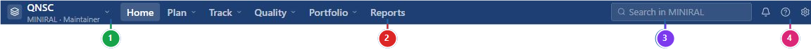
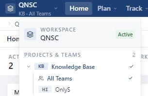

Context selector
Cho biết Workspace, Project và Team đang chọn; dùng để đổi phạm vi.
Đăng nhập chỉ đưa bạn vào Rova. Trước khi xem hoặc cập nhật dữ liệu, hãy xác nhận đúng Project và Team trên thanh đầu trang.
Dùng tài khoản tổ chức đã được kích hoạt. Không cần xin thêm quyền chỉ để mở trang đăng nhập.
Truy cập địa chỉ do tổ chức cung cấp. Trang đăng nhập hiển thị trường Email address.
Nhập email rồi chọn Continue, hoặc chọn Sign in with Microsoft nếu tổ chức của bạn dùng Microsoft.
Làm theo màn hình xác thực của tổ chức. Không chia sẻ mật khẩu hoặc mã xác thực cho người khác.
Khi thành công, Rova mở trang Home; tên hoặc ảnh đại diện của bạn xuất hiện ở góc trên bên phải.
Thanh đầu trang giữ các điểm vào chính. Menu hiển thị có thể khác theo quyền và phạm vi của bạn.

Đây là bước cần làm lại mỗi khi bạn chuyển sang sản phẩm hoặc nhóm khác.

Chọn khu vực hiển thị Workspace và dòng Project · Team ở góc trên bên trái.
Danh sách chỉ hiển thị Project bạn được phép truy cập. Mở Project cần làm việc để xem các Team có sẵn.
Chọn Team cụ thể khi làm việc với nhóm đó. All Teams là phạm vi xem của Admin, không phải một Team để gán cho Work Item.
Sau khi chọn, Rova đưa bạn về Home. Xác nhận dòng Project · Team đã đổi trước khi tiếp tục.
Dữ liệu theo Project/Team được tải lại. Nội dung từ phạm vi trước không được giữ lại như dữ liệu hiện tại.
Home là điểm kiểm tra nhanh sau khi đăng nhập hoặc đổi phạm vi.
Công việc đang gán cho bạn. Chọn All để mở danh sách đầy đủ.
Hoạt động gần đây mà tài khoản của bạn được phép xem.
Tổng quan Project, Iteration đang chạy, tiến độ và lỗi đang mở.
Ba công cụ này luôn nằm trên thanh đầu trang và phục vụ người dùng đang đăng nhập.
Kiểm tra theo thứ tự dưới đây trước khi kết luận dữ liệu bị mất.
Mở lại context selector và kiểm tra đúng Workspace. Nếu Project vẫn không xuất hiện, nhờ Workspace Admin kiểm tra Project Access của tài khoản.
Admin làm việc ở All Teams. Editor chỉ thấy Team được gán; nhờ Workspace Admin kiểm tra Team membership.
Quay về Home, chọn một Project/Team bạn được phép truy cập rồi mở lại chức năng từ menu. Nếu vẫn cần dữ liệu đó, liên hệ Workspace Admin.
Đọc lại context selector, chờ dữ liệu tải xong và làm mới trang một lần. Không cập nhật Work Item cho đến khi tiêu đề phạm vi đã đúng.
Email tài khoản, tên Project/Team cần truy cập và ảnh chụp context selector hoặc thông báo đang thấy. Không gửi mật khẩu hoặc mã xác thực.